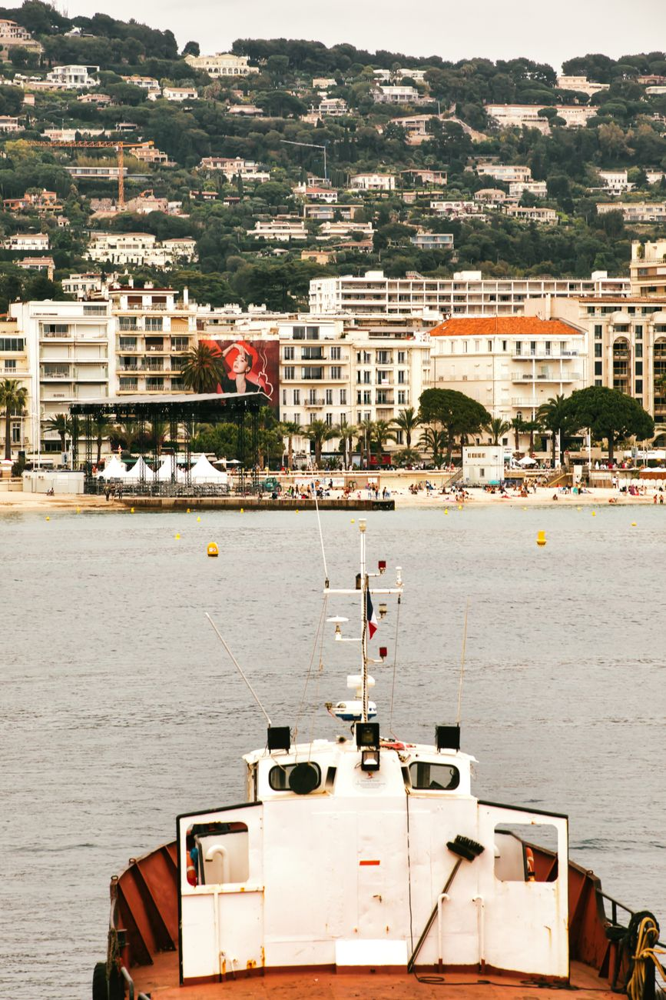
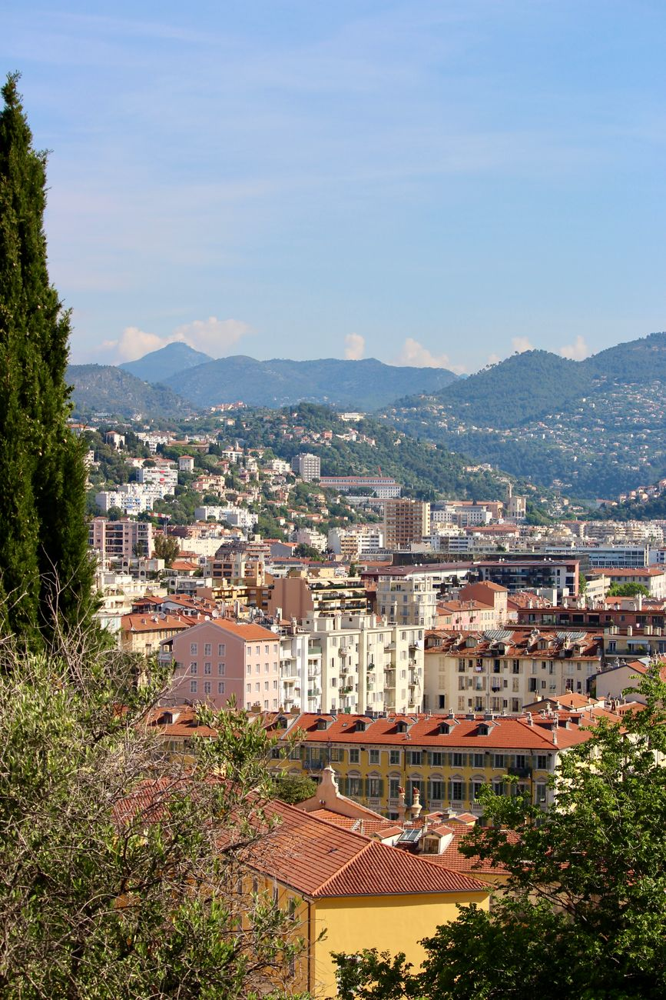
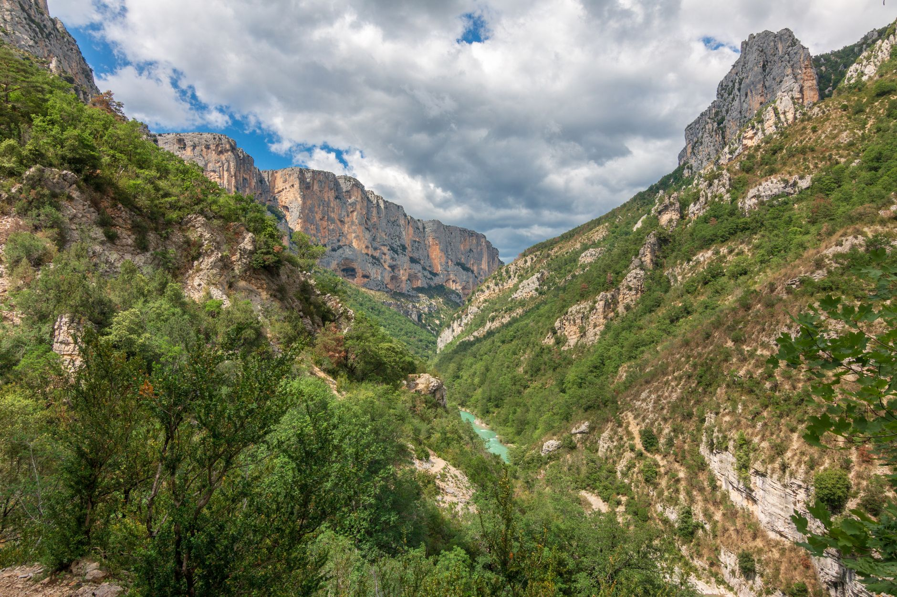
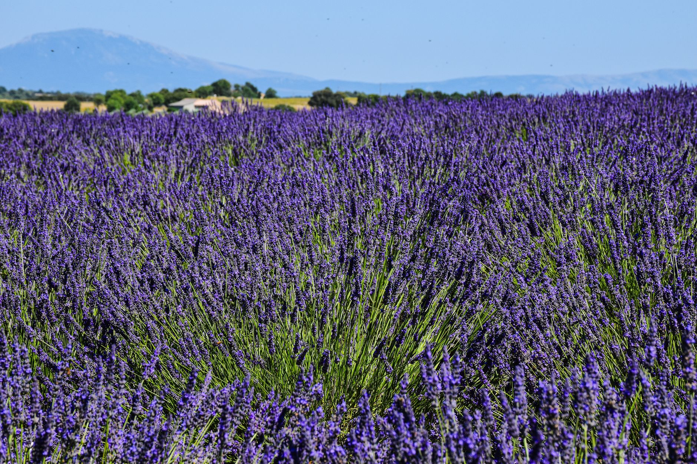
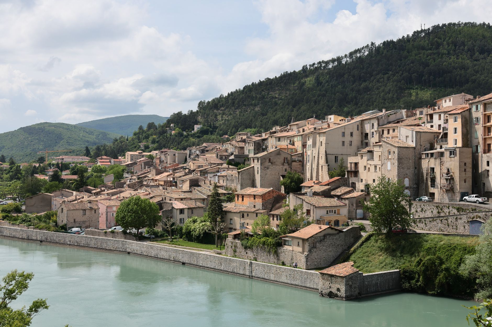

Photo: Jean-Paul Wettstein / Pexels
On 1 March 1815, Napoleon landed at Golfe-Juan with about 1,000 men, escaped from exile on Elba, and marched north to reclaim France. He reached Grenoble in under a week. The road he took is now signposted route N85, marked the whole way by gilded eagle statues, and inaugurated as a tourist route in 1932.
This stretch covers the section through Grasse, Castellane, Digne-les-Bains and Sisteron, before the road continues on toward Gap and Grenoble.
-

Golfe-JuanWhere Napoleon landed with about 1,000 men on 1 March 1815, beginning the Hundred Days. -

GrasseThe perfume capital, one of the first towns his column passed through. -

CastellaneA village under a cliff-top chapel, gateway to the Gorges du Verdon. -

Digne-les-BainsRegional capital of the Alpes-de-Haute-Provence, known today for lavender. -

SisteronThe "Gateway to Provence," overlooked by a citadel above the Durance river.
Stop photos: arnaud audoin, AXP Photography, Robert Pügner, AXP Photography, César Guillotel / Pexels
The gilded eagle statues along the route mark where Napoleon is said to have stopped each night. They're a genuinely rare thing: physical markers of a specific week-long military march, still standing two centuries later.
Good to know before you drive it
- France's speed limits: 130 km/h on motorways (110 in rain), 80-90 km/h on rural roads depending on the road, 50 km/h in towns. The mountain sections here are signed well below that.
- This road climbs steadily from sea level at Golfe-Juan to around 485 m at Sisteron, with higher passes in between. Expect real temperature and weather changes between the coast and the interior.
- Sisteron's citadel is a genuine strategic chokepoint, not just a viewpoint: the town sits where the Durance river cuts the only easy pass through this stretch of the Alps, which is exactly why armies (including Napoleon's) had to come through here.
- 179 km is a full but doable day if you want to stop in each town. Rushing it defeats the point of a historic route.
Ready to book this drive? This route runs 179 km and about 3.3 hours behind the wheel, entirely inside Auto Europe's coverage area.
We book through Auto Europe. It compares Hertz, Sixt and the other major agencies in one search, with cross-border and one-way terms visible before checkout instead of buried in each company's own fine print.
Compare car rental prices →This is an affiliate link. Booking through it may earn Travel Gap a commission at no extra cost to you.
Read the full Europe road trip planning guide for what to check before you book anywhere on the continent.